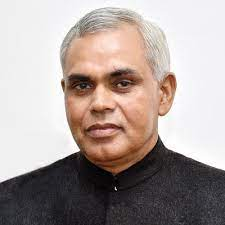

| Sr.No | State Name | Capital Name | Governor Name/Image | CM Name/Image |
|---|---|---|---|---|
| 1 | Andra Pradesh | Amaravati | Biswabhushan Harichandan | Y. S. Jagan Mohan Reddy |
| 2 | Arunachal Pradesh | Itanagar | Brigadier B.D Mishra (Retd) | Pema Khandu |
| 3 | Assam | Dispur | Jagdish Mukhi | Himanta Biswa Sarma |
| 4 | Bihar | Patna | Phagu Chauhan | Nitish Kumar |
| 5 | Chhattisgarh | Naya Raipur/Bilaspur | Anusuiya uikey | Bhupesh Bhagel |
| 6 | Goa | Panji | PS Sreedharan Pillai | Pramod Sawant |
| 7 | Gujrat | Gandhinagar | Acharya Devvrat  | Vijay Rupani |
| 8 | Haryana | Chandigarh | Bandaru Dattatreya | Manohar Lal Khattar |
| 9 | Himachal Pradesh | Summer Capital:Shimla Winter Capital:Dharamshala | Rajendra vishwanath Arlekar | Jai Ram Thakur |
| 10 | Jharkhand | Ranchi | Ramesh Bais | Hemant Soren |
| 11 | Karnataka | Bengaluru | Thawar Chand Gehlot | Sri Basavaraj Bomai |
| 12 | Kerala | Thiruvananthapuram | Arif Mohammed Khan | Pinarayi Vijayan |
| 13 | Madhya Pradesh | Bhopal | Mangubhai Chaganbhai Patel | Shivraj Singh Chouhan |
| 14 | Maharashtra | Mumbai | Bhagat Singh Koshyari | Uddhav Thackeray |
| 15 | Manipur | Imphal | Shri La. Ganesan | N. Biren Singh |
| 16 | Meghalaya | Shilong | Satya Pal Malik | Conrad kongkal Sangma |
| 17 | Mizoram | Aizwal | Dr. Kambhampati Haribabu | Zoramthanga |
| 18 | Nagaland | Kohima | R.N Ravi | Neiphiu Rio |
| 19 | Odisa | Bhubaneshwar | Prof. Ganeshi Lal | Naveen Patnayak |
| 20 | Panjab | Chandigarh | Shri Banwarilal Purohit | Bhagwant Mann |
| 21 | Rajasthan | Jaipur | Kalraj Mishra | Ashok Gehlot |
| 22 | Sikkim | Gangtok | Ganga Prasad | Prem Singh Tamang (PS Golay) |
| 23 | Tamil Nadu | Chennai | Banwarilal Purohit | M. K. Stalin |
| 24 | Telangana | Hyderabad | Dr Tamilisai | K. Chandrashekhar Rao |
| 25 | Tripura | Agartala | Satyadev Narayan Arya | biplab Kumar Deb |
| 26 | Uttar Pradesh | Lucknow | Anandiben Patel | Yogi Adityanath |
| 27 | Uttarakhand | Winter Capital:Dehradun Summer Capital: Gairsain | Baby Rani Maurya | Shri Pushkar Singh Dhami |
| 28 | West Bengal | Kolkata | Jagdeep Dhankar | Mamta Banerjee |
| Union Territory | Capital | Governor |
|---|---|---|
| Andaman & Nicobar | Port Blair | Shri. Devendra Kumar Joshi (Lieutenant Governor)  |
| Chandigarh | Chandigarh | Banwarilal Purohit  |
| Dadra and Nagar Haveli and Daman and Diu | Daman | Shri Praful Patel (Administrator)  |
| Delhi | New Delhi | Vinai Kumar Saxena  |
| Jammu and Kashmir | Srinagar | Shri Manoj Sinha (Lieutenant Governor)  |
| Lakshdweep | Kavarati | Shri Praful Patel (Administrator)  |
| Puducherry | Puducherry | Dr. Tamilisai Soundararajan  |
| Ladakh | Leh | Shri Radha Krishna Mathur (Lieutenant Governor)  |